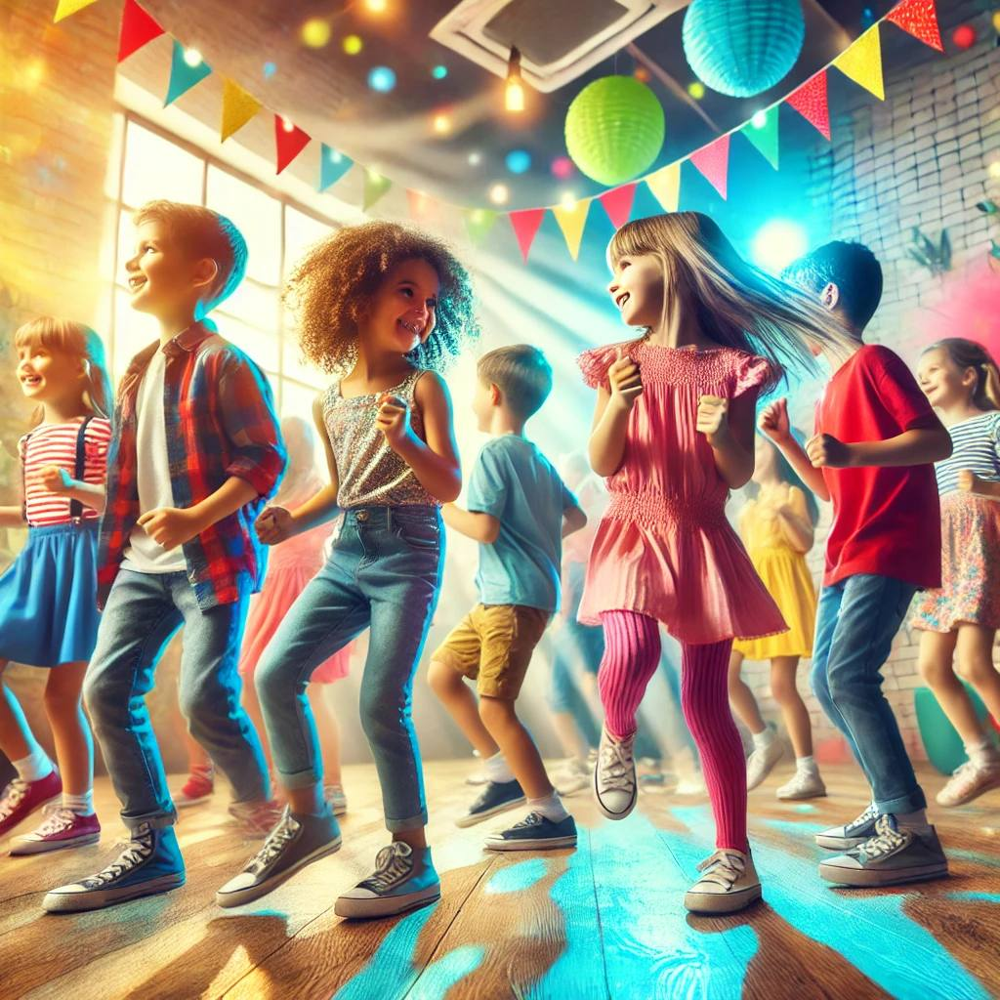
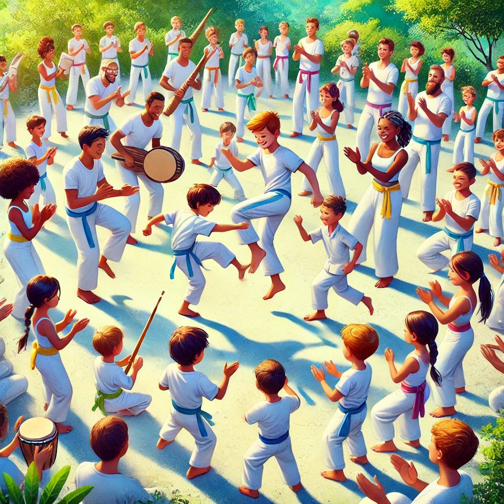
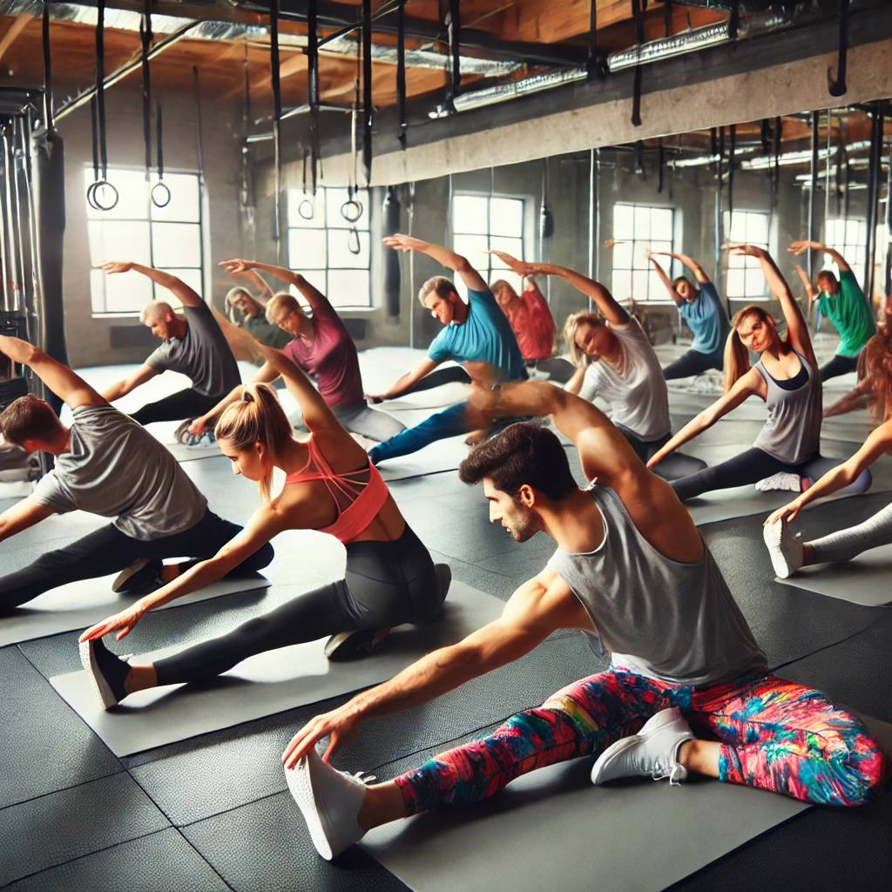
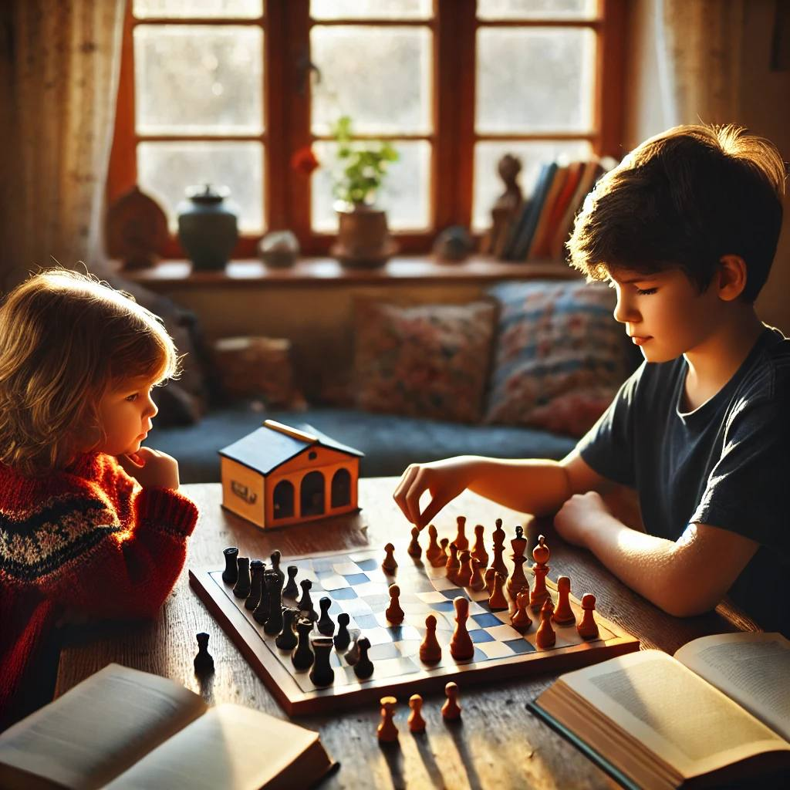

Танці
Танці є дуже корисними в розвитку дитини.Це розвиває підвищення самооцінки та впевненості.Соціальний розвиток.Дисципліна та відповідальність
Ціна: 8 занять - 1800₴
Детальніше
Художня студія
- це простір, призначений для творчої роботи та розвитку художніх здібностей.Художня студія для дітей має багато переваг для їхнього розвитку. Ось кілька ключових: 1. Розвиток творчих здібностей 2. Поліпшення дрібної моторики 3. Самовираження та емоційний розвиток
Ціна: 1 година - 300₴
ДетальнішеКапойера
Капоейра є унікальним поєднанням бойового мистецтва, танцю та музики, і вона сприяє розвитку багатьох важливих навичок у дітей.
Ціна: 1600₴
ДетальнішеСтретчинг
Стрейчинг (розтяжка) — це комплекс вправ, спрямованих на розтягування м'язів і підвищення гнучкості тіла.
Ціна: 8 занять - 1800₴
Детальніше
Айкідо
— це японське бойове мистецтво, яке не лише допомагає дітям розвинути фізичну форму, але й сприяє вихованню важливих життєвих навичок.Айкідо також має духовний аспект, у розвитку внутрішньої гармонії та самоконтролю.
Ціна: 8 занять - 2000₴
ДетальнішеШахи
Шахи є чудовим інструментом для розвитку інтелектуальних та особистісних навичок у дітей. Ось основні аспекти, які розвивають шахи
Ціна: 4 занять - 900₴
Детальніше
Англійська мова
Заняття англійською мовою для дітей мають безліч переваг, які впливають на їхнє майбутнє та розвиток.
Ціна: 8 занять - 2000₴
Детальніше
Підготовка до школи
Підготовка дітей до школи є важливим етапом, що допомагає забезпечити плавний та успішний початок навчання
Ціна: 8 занять 2000₴
Детальніше
Театральна студія
Заняття в театральній студії для дітей мають численні переваги, що позитивно впливають на їхній розвиток.
Ціна: 2 години - 400₴
Детальніше